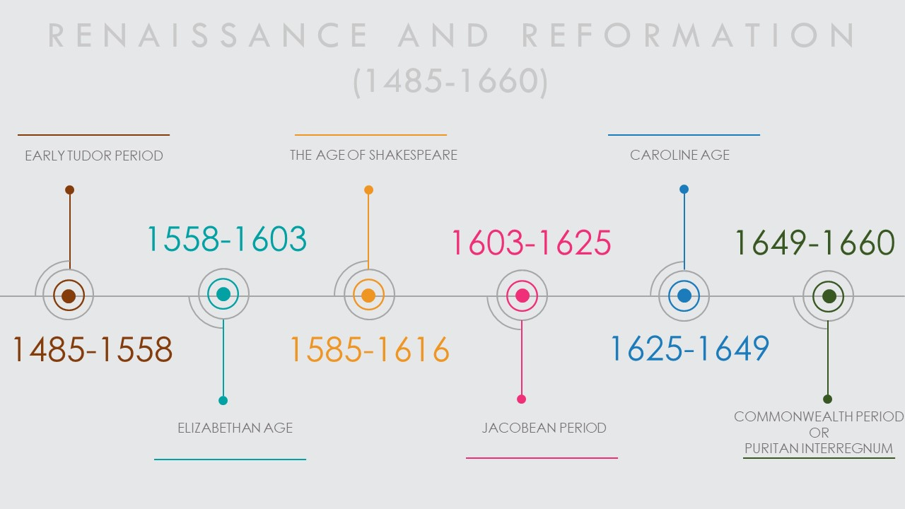
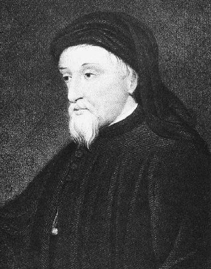
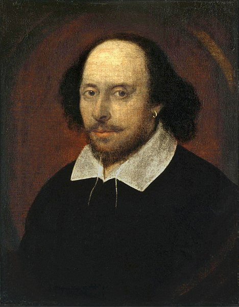
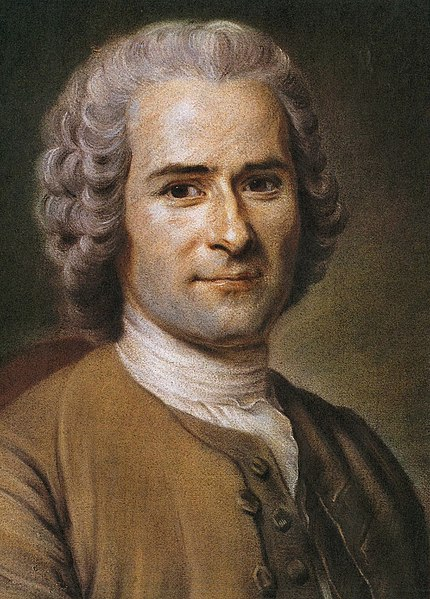
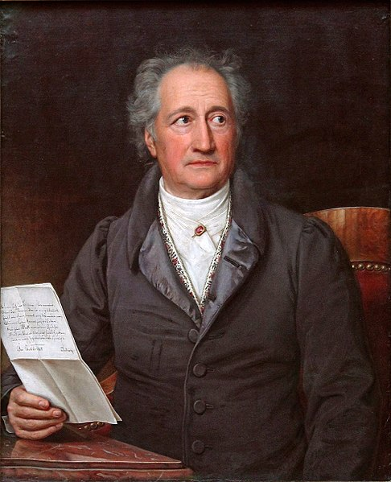
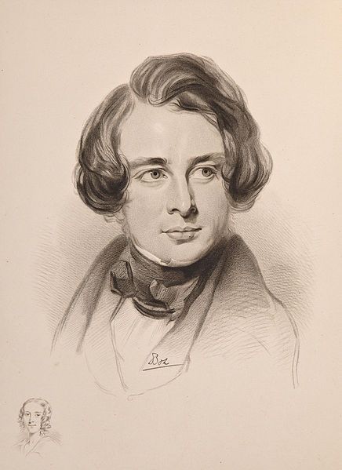

Medieval Period (428CE - 1485CE)
Medieval Period or Dark Ages as it is called is considered to be the period between the fall of Roman
empire and the start of the era of Renaissance. The name "Medieval" or "Middle Ages" comes from later
periods, it is also believed that even people who lived during that period weren't sure about the
period name of their times and there are different perspectives about when this period started and
ended.
These times are "Dark" because of the lack of technology. The fact that in these times there was
the rise of chivalry is worth-adding. The language of early works in that era is either Latin for
Western and Central Europe where Catholic Church stands or Greek for the Eastern Europe where Orthodox
Church stands.
At the so called Old English/ Anglo Saxon period (428-1066 CE) there were many translations of old works and at the same time the English language was slowly forming. One of the earliest epic poems that was written in Old English in that period is the Beowulf (700CE) by an unknown author. The earliest Old English poem though, is written by Caedmon and it's called Hymn (c.658-680CE). Many works were destroyed in that period because war in England was common so that someone takes the crown. In the Old Greek language is Digenes Akritas written during the 11th and the 12th century, in the Old German is Nibelungenlied written around 1200 CE and the oldest epic poem of French literature is The Song of Roland in c. 11th-12th centuries about the battle of Roncevaux Pass in 778 CE. The Song of Roland belongs mostly to Middle English period (1066-1200CE) when Normans were ruling in England. Normans were coming from France and that specific poem was really popular there in that time. In Middle English period many Arthurian legends were written like Historia Regum Britanniae by Geoffrey of Monmouth. It was a book about the Kings of Britain. There are aren't many works attributed to women in that period, but Marie de France is one of the first women that contributed a lot in literature. There is also highly possibility that she wasn't the first one of that period. In Medieval times being an author wasn't like what it is today. Many works are by anonymous authors not because of loss of information but because there was a belief that attributing the work to an individual was not important. Late/High Medieval (1200-1485 CE) was the period for Arthurian romances like Sir Gowain and the Green Knight. It's a story about a knight who goes on a quest. Many authors from later periods like Tolkien were influenced by it and started writting stories with a hero that goes on a quest that their failure might possibly cause the end of the world. Geoffrey Chaucer was the first to write Canterbury Tales in Middle English, noone used to write in any other language rather than Latin, Greek, or French but Chaucer took that risk and saw that he was successful, after that many other authors began to write in English. By the restriction of the popular languages the reading audience was also restricted, so the writting in their own languages eventually increased the reading audience as well.
Renaissance and Reformation (1485-1660)
The movement of Renaissance began in Italy and then got spread out in Europe and in the Western World.
Each country experienced this period differently and in some countries the impact of Renaissance
was less effective, mostly where the Orthodox Church was rising. Literature in that period is consisted
of many characteristics of ancient Greece and Rome. There is that belief that everyone should be
able to critisize in an anthropocentric perspective and see the world from that exact perspective.
As stated before, it began in Italy and some writers are Machiavelli, one of his works being the
book The Prince, in which he is stating that rulers can use immoral means in order to keep ruling,
Petrarch, one of his works being his poetry Canzoniere. About English literature of that period it
is worth-mentioning the fact that works were now consisted of less religious content and there were
more plays than poem since theatre has made its appearence on English people's lives. Writers of
the Early Tudor Period (1485-1558) are Sir Thomas Wyatt, Henry Howard, Sir Thomas More among others.
Wyatt was the first poet of that period in England while Howard published many translations of Rome's
Classical Period works. They are also considered father's of sonnets. Thomas More was the writer
of Utopia in 1516, where he describes a fictional island and its society and traditions. Some scholars
stated that More believed that this way of life was the one that the world should be following as
well. In Elizabethan Age (1558-1603) when Elizabeth I is on the throne, there are authors like Shakespeare,
but he even has an era by his own, after all he is perhaps the most important English figure of that
era. Other writers are Thomas Sackville and Christopher Marlowe. Thomas Sackville and Thomas Norton
wrote Gorboduc, each of them a specific part of it accordingly. Gorboduc play is considered the first
English play written in blank verse and its storyline is about a situation when the succession to
the crown is not clear. In the Age of Shakespeare (1585-1616) William Shakespeare rises and with
his work he manages to become England's national poet. Most of his work is still widely known today
and it is also noticeable the fact that with the language that he used, he included many phrases
and idioms that are also used today. Some of his plays are The Two Gentleman of Verona, Romeo and
Juliet, Julius Caesar. In Jacobean Period (1603-1625) when James I was king of England, the most
important poet of that period was Ben Johnson (The Alchemist, Everyman in His Humour). There was
a new genre of poems with complicated storylines and strange allegory. It was called metaphysical
poetry and a well known metaphysical poet is John Donne.
The era of Reformation is consisted of two sub-eras: Caroline Age and Commonwealth Period or Puritan
Interregnum. During the Caroline Age (1625-1649) king of England was Charles I and the Caroline Age
comes to its end once Charles dies. The metaphysical poets continue producing lots of work in that
era especially with Richard Crashaw and Thomas Traherne. Thomas Traherne's most works were published
after his death so he wasn't known during the time that he was alive. Charles had many enemies that
wanted to end the monarchy in England. But this era is well known for a group of poets of Charles,
that were called The Cavalier poets. These poets were devoters of the king who loved art. Some poets
from this group were Sir John Suckling and Richard Lovelace. All of them followed a certain way of
style in their poems and they were influenced from Classical Rome's period poets like Horace and
Ovid. There were also some writers like John Milton who even if they were writing in that period
they never published their work until decades later. As mentioned above, the king had enemies that
would attempt anything to make monarchy fall. They managed to imprison him and executed him in 1649
so the poets that were supporting him lost their jobs or even their lives. As a result, certain poets
chose to publish their work later on when they would feel more safe. In Puritan Interregnum (1649-1660)
Oliver Cromwell was the dominant authority against the king and after king's death he managed to
eventually "harm" literature. He forbade authors to publish their works freely because he was afraid
that someone would undermine him with their content. All publishing material should have followed
a specific style and bad things of the current authorities shouldn't have been mentioned. Even John
Milton who was a Protestant and on the same side with Cromwell was against this. Apart from the restrictions
in publishing Cromwell closed all theatres. Authors kept writting but published on later periods.
The Enlightenment (Neoclassical) Period (c. 1660-1790)
The Enlightenment era is also called Neoclassical era. Neoclassical comes from "neo" and "classical".
Neo in greek means new. The age of Classical period had a huge impact in the writings of authors.
One difference with the Renaissance Period is that humans were seen as not just good, but as souls
with many flaws. The literature of that period was formed by the combination of logic and reason.
Englightenment is broken down into three eras: the Restoration Period, the Augustan Period and the
Age of Johnson.
The Restoration Period (1660-1698) begins with the reestablishment of monarchy. As soon as Oliver
Cromwell's son takes his father's place, Charles II the son of Charles I comes back from Europe with
a whole lot of support and takes back his father's throne. From now on for this period, literature
will gain more glorious days. Charles II reopened theatres and built many luxurious stages that were
having equipment by the latest technology at those times. It was the very first time that women were
allowed to be actresses because until then the female roles were being played by males. There are
new types of plays, plays that were having actors and actresses and other plays that were having
only actors if the topic required strong men and only actresses if they wanted to give emphasis to
dramatic situations. Actors obtained the title of celebrities and required bigger payments according
to their status. Some of the plays in that period were old ones from previous ages like plays of
Shakespeare but also new ones. Some of the new authors were William Wycherley and George Etherege.
They both wrote comedies like The Plain Dealer and Man of Mode. The comedies of that era introduced
improper humour. Poetry development was constant in that period. Many authors chose to publish their
works from Interregnum era. Sir William Davenant wanted to rewrite in new versions the most well
known works of previous eras. In lyric poetry, authors new style of writing was writing in the first
person. Authors that wrote satires and parodies were the Duke of Buckingham, Aphra Behn. The ones
that went too far with satirizing though, were punished. Authors continued writing history, philosophical
writing and religious writing. The new types of writing thouth were the novels and journalism. Aphra
Behn is considered by some that she wrote the first novel on English "Love Letters Between a Nobleman
and His Sister". The first newspapers were formed and the most successful one was The London Gazette.
There were also journals about specific sciences but they weren't like newspapers. It is believed
that those were the first magazines. Some of these magazines were Temple Bar Journal, The Observer.
Charles Gildon was writing biographies of well-known authors but this type of writing was highly
doubted at first.
In The Augustan Age (1698-1750) there were many worth mentioning authors. Jonathan Swift wrote many
satires but also poetry. He managed to combine different genres in prose like satire and parody in
his work A Tale of a Tub. Gulliver's Travels was also written by Swift. Alexander Pope was the most
popular poet in that age. Pope translated Homer's epic poems and also used to satirize his enemies
in The Dunciad. Jean-Jacques Rousseau was a philosopher from France. He managed to influence this
whole era and also the French Revolution. Rousseau had many theories for politics, religion and human
development. Voltaire was also a French philosopher in Enlightenment. He wrote history "History of
Charles XII", poetry "The Maid of Orleans" and he was against Christianity, the Catholic Church wouldn't
let people believe freely whatever they want to believe and he thought this was wrong.
Significant prose writers of the Age of Johnson (1750-1790) are Samuel Johnson and Edward Gibbon.
Johnson's works were his Dictionary and Lives of Poets. He managed to do something that noone else
has done before and this is why he is known. He made a set of rules and standards that someone has
to follow in order to write prose. Gibbon wrote history (The Decline and Fall of the Roman Empire)
and he is attributed by his careful and elegant work, and also he has done an excellent research
and found proper sources.
Romantic Period (1790-1830)
In Romantic Period there is an intention of moving on away from neoclassicism, giving emphasis to emotions, imagination, nature. The narrator of a story is not as important anymore and the emphasis now is given in the content. Johann Wolfgang von Goethe was a German writer, he wrote the novel The Sorrows of Young Werther and this specific novel influenced a lot the later Romantic movement. The topic on this novel was a romantic crush that ends in suicide. The most important novelist of England in that time was Sir Walter Scott a Scottish novelist, poet and historian. His first work was Waverley which was a historical novel. Weverley novels and other historical romances of Scott's influenced many other artists in Europe. William Blake was ahead of his time since he wasn't recognised during his lifetime but has been an important figure for Romantic Period. He was the writer of Songs of Innocence and Songs of Experience, "Innocence" and "Experience" were being the Paradise and the Fall accordingly. Lord Byron (Don Juan) and Percy Bysshe Shelley (Ozymandias) were significant poets of that age. Shelley believed in the necessity of Atheism and as a result he was dismissed from Oxford. Romanticism in America brought a lot of enthusiasm to people. They were actually free to act the way they liked and free from religious traditions and restrictions. Gothic literature makes an appearence in America and in Europe. Gothic combines fiction and horror, death and romance. Some American writers of Gothic literature were Nathaniel Hawthorne (The Scarlet Letter) and Washington Irving (The Legend of Sleepy Hollow). In Hawthorne's novel there are specific characteristics in the storyline like sin and guilt and it is considered his most successful work.
Victorian Period and The 19th Century
Queen Victoria's reign lasted many years from 1837 to 1901, thus the name of the period. It has not escaped our notice that the novels of that period were more than the poetry that was produced, which made prose and novels being the main genre of literature. The most popular novelists of the early decades of Victoria's reign were Charles Dickens and William Thackeray. Dickens most important works were Oliver Twist (1837-1839), David Copperfield (1849-1850) and Nicholas Nickleby (1838-1839). He tended to comment to all the bad situations and the social issues that poor people had to go through. Thackeray's style (Vanity Fair 1848) was close to Dickens but it was also less sensational and more sarcastic. Other novelists from the later Victorian period are George Eliot and Thomas Hardy. George Eliot is a pseudonym, authors used to use these and not their real names but the so called "pen names". Her real name was Mary Ann Evans. Her most important novel was Middlemarch and it was about a fictional town and its society and history. In Victorian literature about poetry, the fact that people wanted to hear stories about chivalry, ladies and knights was noticeable. Alfred Tennyson's Idylls of the King is an example of those poems, in which Tennyson talks about King Arthurs quests combined with current worries. Finally, in theatre's literature there were many comic operas and plays like Oscar Wilde's The Importance of Being Earnest.
-

Fig8. - Geoffrey Chaucer, uploaded at Wikipedia's United States public domain by user Jlorenz1 Geoffrey Chaucer
English poet
c.1343-c.1400
The greatest English poet of Middle Ages
He was also a diplomat -

Fig9. - William Shakespeare, uploaded at Wikipedia's public domain by user Hohum William Shakespeare
English poet
1564-1616
England's national poet
World's pre-eminent dramatist -

Fig10. - Jean-Jacques Rousseau, uploaded at Wikipedia's United States public domain by user MLWatts Jean-Jacques Rousseau
French philosopher
1712-1778
Influenced the French Revolution
He is a national hero in the Pantheon in Paris
-

Fig11. - Johann Wolfgang von Goethe, uploaded at Wikipedia's United States public domain by user Kentin Johann Wolfgang von Goethe
German writer and statesman
1749-1832
Influenced the nineteenth century
He was also a natural philosopher -

Fig12. - Charles Dickens, uploaded at Wikipedia's United States public domain by user Scewing Charles Dickens
English writer
1812-1870
Creator of the world's best-known fictional characters
Became an internationally literary celebrity